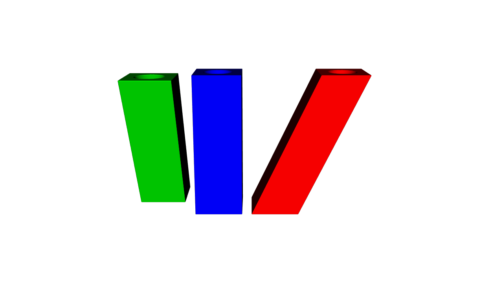
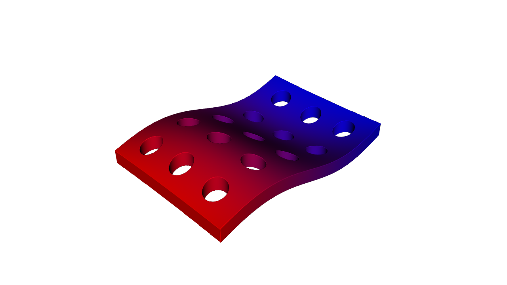
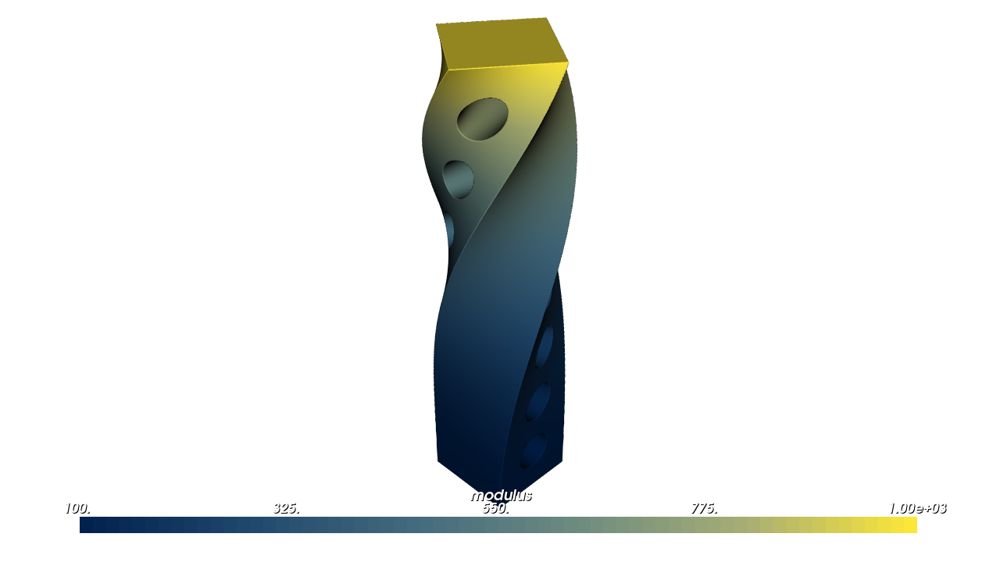
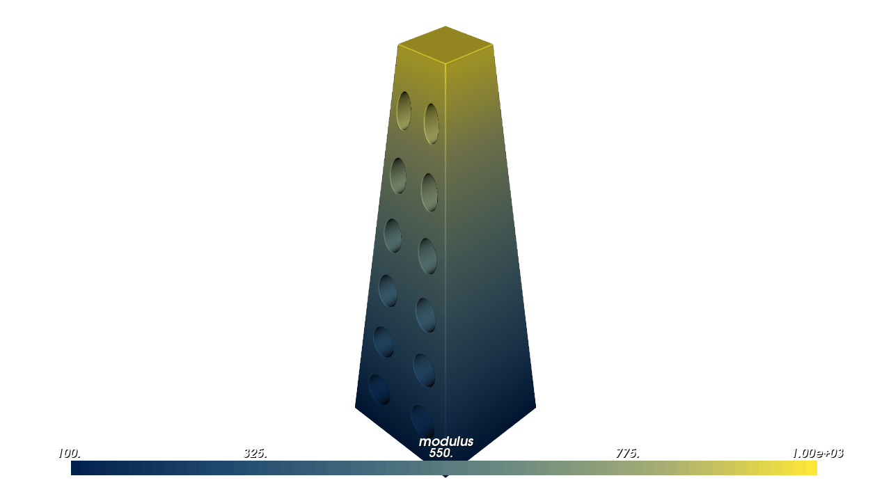
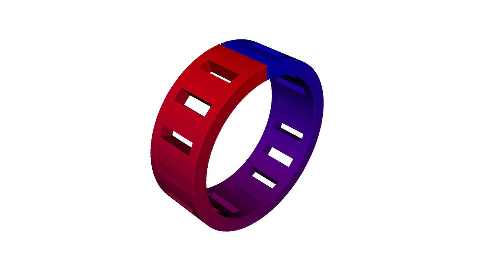
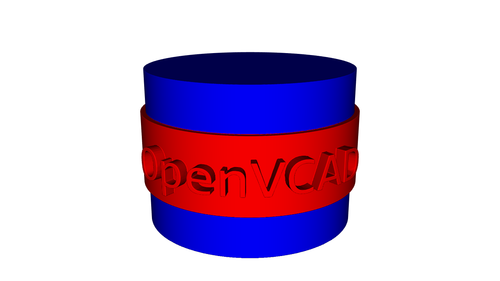
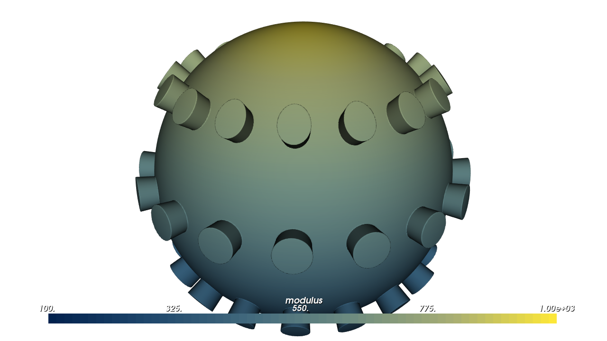
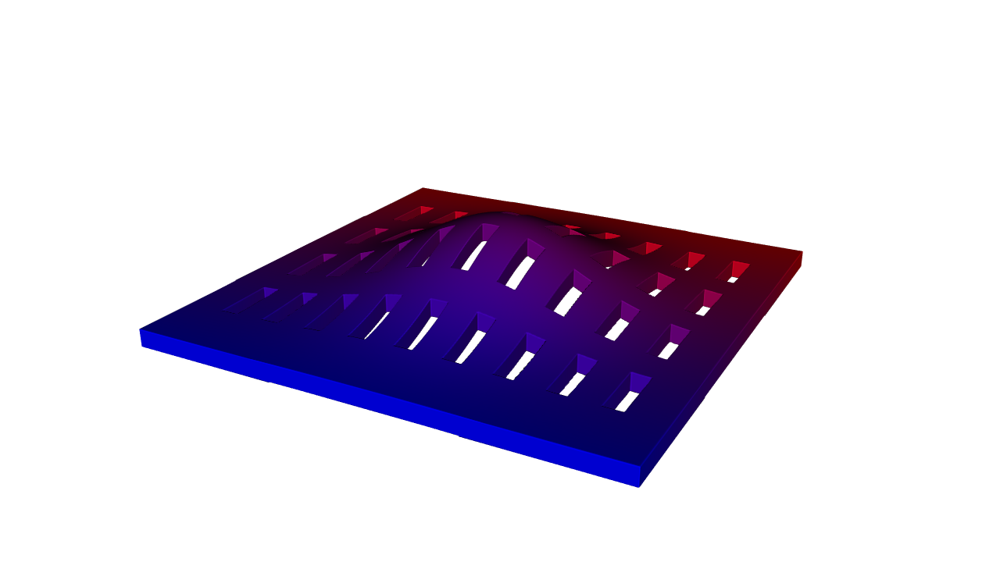
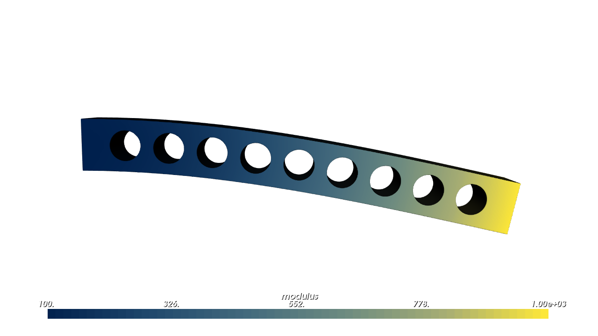

Deforming Space#
Sometimes the part you need is one you already have, only leaning, twisted or bent. A deformation changes a part’s shape by moving its points through space. You don’t rebuild the part: you wrap it in a deformation node. The part keeps its material, so a red-to-blue gradient bends right along with it.
What You Will Learn#
In this guide you will learn how to:
Shear a part so it leans.
Warp a part with a map you write yourself.
Twist, taper and bend a part with built-in deformations.
Wrap a flat design around a cylinder or onto a sphere.
Displace a part by a displacement field, such as a simulation result.
Grade material along a deformation, for example stiffer where a part twists more.
Prerequisites#
This guide assumes you have completed the Getting Started Guide, in particular Lessons 2–3 (CSG and transformations) and Lessons 4–6 (attributes), and the Functional Grading Guide.
Some lessons accept a field where you might expect a number: a value that changes from point to point, such as pv.FloatAttribute("0.08 * z"). Fields accept the same inputs as described under Parameters that vary through space in Offsets, Blends and Arrays.
Running the Examples#
The scripts are in examples/deformation/, plus examples/transforms/shear.py for Lesson 1. Run any script directly:
cd examples/deformation
python 01_warp.py
Each script ends with viz.Render(root) or viz.Render(root, materials), which opens the interactive OpenVCAD preview window. Close the window to end the script.
Note: To see an attribute such as modulus or volume fractions in colour, pick it from the Attribute list at the top of the render window (also under Render -> Attribute). Each lesson says which one to pick.
How a deformation works#
You might expect OpenVCAD to push each point of the part to its new place. It works the other way round. For each point in space, it asks: which point of the original part ended up here? Then it looks up the original part at that point. The rule that answers the question is the deformation’s map.
Because every lookup lands on the original part, everything the part carries comes along: its shape, its material and its attributes. The part you deform is the deformation’s child, like the child of a transform.
Deformation |
Python |
Lesson |
|---|---|---|
Shear |
|
1 |
Your own map |
|
2 |
Twist, taper, bend |
|
3, 4 |
Wrap a flat design |
|
5 |
Displacement |
|
6 |
Lesson 1: Shear#
A shear makes a part lean, like pushing the top of a deck of cards sideways. The bottom stays put and each layer slides a little further than the one below.
pv.Transform.shear(direction, normal, factor, child, origin=...) slides points along direction. Points on the fixed plane through origin stay put; normal is the direction pointing straight out of that plane, and it must be at right angles to direction. A point at height h above the plane slides factor * h. To lean a part by an angle, pass the tangent of that angle, as the example does with np.tan.
A shear is a 4×4 matrix, so it lives on pv.Transform. pv.Transform.shear_matrix(...) returns the matrix itself, written row by row, so you can combine it with others, for example T @ S to shear and then move.
import numpy as np
import pyvcad as pv
import pyvcad_rendering as viz
materials = pv.default_materials
# A hollow column standing on the plane z = 0
column = pv.Difference(pv.RectPrism(pv.Vec3(0, 0, 15), pv.Vec3(10, 10, 30)),
pv.Cylinder(pv.Vec3(0, 0, 15), 3.0, 32.0))
# Shear: points slide along +X by tan(25 degrees) times their height above the plane z = 0,
# so the base stays put and the column leans. The bore leans with it.
lean = np.tan(np.radians(25.0))
leaning = pv.Transform.shear(pv.Vec3(1, 0, 0), pv.Vec3(0, 0, 1), lean, column.clone())
leaning.set_attribute(pv.DefaultAttributes.VOLUME_FRACTIONS, pv.VolumeFractionsAttribute([("1.0", materials.id("red"))]))
# shear_matrix() returns the 4x4 matrix, so a shear composes with other matrices:
# here a sideways shear about the column's mid-height, then a move along -X.
T = np.eye(4)
T[:3, 3] = [-25.0, 0.0, 0.0]
S = pv.Transform.shear_matrix(pv.Vec3(0, 1, 0), pv.Vec3(0, 0, 1), -lean, origin=pv.Vec3(0, 0, 15))
side_lean = pv.Transform(T @ S, column.clone())
side_lean.set_attribute(pv.DefaultAttributes.VOLUME_FRACTIONS, pv.VolumeFractionsAttribute([("1.0", materials.id("green"))]))
column.set_attribute(pv.DefaultAttributes.VOLUME_FRACTIONS, pv.VolumeFractionsAttribute([("1.0", materials.id("blue"))]))
original = pv.Translate(-12.0, 0.0, 0.0, column)
root = pv.Union(0.0, [original, leaning, side_lean])
viz.Render(root, materials)
Render (volume_fractions)

Pick volume_fractions in the viewer. The blue column in the middle is the original. The red one leans along +X with its base fixed, and its hole leans too. The green one is sheared along Y about its mid-height, so its middle stays put while its top and bottom slide opposite ways; T then moves it along −X.
Lesson 2: Warp with your own map#
pv.Warp(map, child, bounds) deforms a part with a map you write. For any point in space, the map returns the point of the original part to look up. Here a flat plate with holes becomes a wave, and its red-to-blue gradient follows the wave.
import math
import pyvcad as pv
import pyvcad_rendering as viz
materials = pv.default_materials
# A flat perforated plate, 60 x 40 x 4 mm, centred on the origin
plate = pv.RectPrism(pv.Vec3(0, 0, 0), pv.Vec3(60, 40, 4))
holes = pv.Union(0.0, [pv.Cylinder(pv.Vec3(x, y, 0), 3.0, 6.0) for x in (-24, -12, 0, 12, 24) for y in (-12, 0, 12)])
part = pv.Difference(plate, holes)
# Material graded along the flat plate. It rides along with the warp, because the warp samples the
# plate (geometry and attributes) at the point each world point pulls back to.
part.set_attribute(pv.DefaultAttributes.VOLUME_FRACTIONS, pv.VolumeFractionsAttribute([
("(x + 30) / 60", materials.id("red")),
("1 - (x + 30) / 60", materials.id("blue")),
]))
# The map g takes a world point to the flat plate's point: here the plate rises and falls in a wave.
# A plain Python function returning three numbers is compiled with numba and runs without the GIL.
def ripple(x, y, z, d):
return (x, y, z - 6.0 * math.sin(x / 10.0) * math.cos(y / 20.0))
# A warp moves material, so it needs the world box of the result: the wave adds 6 mm above and below.
warped = pv.Warp(ripple, part, bounds=(pv.Vec3(-30, -20, -9), pv.Vec3(30, 20, 9)))
viz.Render(warped, materials)
Render (volume_fractions)

Pick volume_fractions in the viewer to see the gradient follow the wave.
Reading and writing the map#
Read the map as “where did this point come from?”. The height z - 6 sin(...) means the material now at height z came from 6 sin(...) lower down, so the plate rises by that much.
A map returns three numbers, so you can write it as:
three expression strings, such as
("x", "y - 2 * sin(x / 5)", "z");three component functions (numba
cfuncs or plain functionsf(x, y, z, d));one plain Python function
f(x, y, z, d)that returns three numbers, likeripple. OpenVCAD compiles it with numba, so it runs natively and in parallel;one numba
cfuncwith signaturevoid(float64, float64, float64, float64, CPointer(float64))that writes the three values into its last argument;any
pv.Vec3Attribute(an attribute with three values per point), including a vector volume.
The d argument keeps the usual attribute signature; a map is always called with d = 0. pv.as_vec3_attribute(value) turns any of these into a Vec3Attribute if you want to build one once and reuse it.
The bounds box#
OpenVCAD can’t tell in advance where your map sends material, so bounds gives the box (minimum, maximum) that holds the warped part. If the box is too small, the part is cut off at it.
Every warp also offers the fields child_x, child_y and child_z: the coordinates of the original point that each point in space came from.
Lesson 3: Twist#
pv.Warp.twist(rate, child, axis=..., origin=...) turns each slice of a part around an axis, like wringing out a towel. The rate is in degrees per millimetre along the axis, and the angle is zero at origin. A constant rate gives an even twist: pv.Warp.twist(3.0, bar) turns the top of a 60 mm bar by 180 degrees.
The rate can also be a field that changes along the part. OpenVCAD reads it on the axis and adds it up as it goes: a rate of 2 degrees per mm over 10 mm turns a slice 20 degrees, and a changing rate is added up the same way. In the example the rate is 0.08 * z, which adds up to an angle of 0.04 * z²: the base barely turns and the top, at z = 60, turns 144 degrees.
A twist also knows its angle at every point. twisted.coordinate_field("angle") gives that angle as a field, and map_range(0.0, 144.0, 100.0, 1000.0) rescales it in a straight line, from a modulus of 100 at 0 degrees to 1000 at 144 degrees.
import pyvcad as pv
import pyvcad_rendering as viz
# A square bar, 12 x 12 x 60 mm, standing on the plane z = 0, with a row of holes through it
bar = pv.RectPrism(pv.Vec3(0, 0, 30), pv.Vec3(12, 12, 60))
holes = pv.Union(0.0, [pv.Rotate(90, 0, 0, pv.Cylinder(pv.Vec3(0, 0, z), 2.5, 14.0)) for z in range(6, 60, 8)])
bar = pv.Difference(bar, holes)
# Twist about the z axis. The rate is in degrees per millimetre and may be a field: here it grows
# with height, so the bottom stays nearly straight and the top winds tighter. A field rate is read
# along the axis and integrated, so the angle at height z is 0.08 * z^2 / 2 degrees (144 at the top).
rate = pv.FloatAttribute("0.08 * z")
twisted = pv.Warp.twist(rate, bar, axis=pv.Vec3(0, 0, 1), origin=pv.Vec3(0, 0, 0))
# The twist angle is a coordinate field, so material can follow it: soft where straight, stiff where wound.
twisted.set_attribute(pv.DefaultAttributes.MODULUS,
twisted.coordinate_field("angle").map_range(0.0, 144.0, 100.0, 1000.0))
viz.Render(twisted)
Render (modulus)

Pick modulus in the viewer: soft where the bar is nearly straight, stiff where it is wound tightest. A twist’s own fields are angle (degrees) and height; warp.coordinate_names() lists the fields of any deformation.
Lesson 4: Taper and bend#
Taper#
pv.Warp.taper(rate, child, axis=..., origin=...) scales each slice of a part toward or away from an axis, and leaves heights alone. The rate is the change in scale per millimetre. The scale is 1 at origin, and OpenVCAD adds the rate up along the axis, as for a twist. In the example the rate is -0.01: full size at the base, 40% at the top, 60 mm up.
The rate may be a field. The scale must stay above zero over the whole part; you get an error otherwise. A taper’s fields are scale and height.
import pyvcad as pv
import pyvcad_rendering as viz
# A square column, 20 x 20 x 60 mm, standing on the plane z = 0, with a grid of holes through it
column = pv.RectPrism(pv.Vec3(0, 0, 30), pv.Vec3(20, 20, 60))
holes = pv.Union(0.0, [pv.Rotate(0, 90, 0, pv.Cylinder(pv.Vec3(0, y, z), 2.5, 24.0))
for y in (-5, 5) for z in range(7, 60, 9)])
column = pv.Difference(column, holes)
# Taper along the z axis. The rate is the change in scale per millimetre, so the section is scaled
# by 1 - 0.01 * z about the axis: full size at the base, 40% at the top. Heights are unchanged.
tapered = pv.Warp.taper(-0.01, column, axis=pv.Vec3(0, 0, 1), origin=pv.Vec3(0, 0, 0))
# The scale is a coordinate field: grade stiffness with it.
tapered.set_attribute(pv.DefaultAttributes.MODULUS,
tapered.coordinate_field("scale").map_range(0.4, 1.0, 1000.0, 100.0))
viz.Render(tapered)
Render (modulus)

Pick modulus in the viewer: the narrow top is stiff and the wide base soft.
Bend#
pv.Warp.bend(radius, child, origin=..., direction=..., axis=...) curls a straight part into an arc. It takes the line through origin along direction and lays it onto a circle of the given radius, around an axis parallel to axis.
A positive radius curls toward
direction × axis(the cross product). With the defaults, +X and +Y, that is +Z, so the part curls up. A negative radius curls the other way.Lengths along the line are kept, and the part stays where it is at
origin.On the side it curls toward, keep the part closer to the line than the radius; anything farther would pass the bend’s centre and fold. Also keep it within half a turn each side of
origin(a length of π times the radius each way).
A bend’s fields are angle (degrees, zero at origin) and radius (distance from the bend’s centre line). In the example a 94 mm strip curls around a 15 mm radius. A full circle is 2π × 15 ≈ 94.2 mm, so the strip almost closes into a ring.
import pyvcad as pv
import pyvcad_rendering as viz
materials = pv.default_materials
# A straight strip along x, 94 mm long, 12 mm wide and 3 mm thick, lying on the plane z = 0, with slots
strip = pv.RectPrism(pv.Vec3(0, 0, -1.5), pv.Vec3(94, 12, 3))
slots = pv.Union(0.0, [pv.RectPrism(pv.Vec3(x, 0, -1.5), pv.Vec3(2, 8, 4)) for x in range(-42, 43, 6)])
strip = pv.Difference(strip, slots)
strip.set_attribute(pv.DefaultAttributes.VOLUME_FRACTIONS, pv.VolumeFractionsAttribute([
("(x + 47) / 94", materials.id("red")),
("1 - (x + 47) / 94", materials.id("blue")),
]))
# Bend the line along +x (through the origin) around an axis along +y with a 15 mm radius. A positive
# radius bends toward direction x axis = +z, so the strip curls up into a near circle (94 mm is just
# under the 2 pi 15 = 94.2 mm circumference). Lengths on the plane z = 0 are kept.
bent = pv.Warp.bend(15.0, strip, origin=pv.Vec3(0, 0, 0), direction=pv.Vec3(1, 0, 0), axis=pv.Vec3(0, 1, 0))
viz.Render(bent, materials)
Render (volume_fractions)

Pick volume_fractions in the viewer: the gradient runs around the ring with the strip.
Lesson 5: Wrap a flat design around a cylinder or sphere#
Some designs are easiest to draw flat: a label, a grip pattern, a row of features around a part. A wrap takes the flat design and wraps it around a round shape.
Around a cylinder#
pv.Warp.wrap_cylinder(radius, child, center=..., axis=..., reference_direction=...) wraps around a cylinder. Draw the design flat, where:
x is the distance around the cylinder, from 0 at the seam (
reference_direction), counter-clockwise aboutaxis, up to 2π times the radius;y is the height along the axis, measured from
center;z is the height above the surface:
z = 0lies exactly on the cylinder, and positivezstands out from it.
Lengths on the surface are kept, so a 40 mm label stays 40 mm long. The wrap’s fields are angle (degrees from the seam) and radius.
import math
import pyvcad as pv
import pyvcad_rendering as viz
materials = pv.default_materials
radius = 20.0
# A flat label: raised text on a thin band, authored in the plane z = 0 with z pointing out of the label.
# x runs along the circumference (0 to 2 pi r), y along the cylinder's axis.
circumference = 2.0 * math.pi * radius
band = pv.RectPrism(pv.Vec3(circumference / 2, 0, 0.5), pv.Vec3(circumference, 14, 1))
# pv.Text lays its glyphs out turned 180 degrees in the XY plane, so turn them upright first.
text = pv.Translate(circumference / 2, 0, 2.0, pv.Rotate(0, 0, 180, pv.Text("OpenVCAD", 9.0, 2.0)))
label = pv.Union(band, text)
label.set_attribute(pv.DefaultAttributes.VOLUME_FRACTIONS, pv.VolumeFractionsAttribute([("1.0", materials.id("red"))]))
# Wrap the label around a cylinder of radius 20 about the z axis. The seam (x = 0) faces +y, so the
# middle of the label (x = pi r) faces -y. Lengths on the surface are kept, and z = 0 lies on it.
wrapped = pv.Warp.wrap_cylinder(radius, label, center=pv.Vec3(0, 0, 0), axis=pv.Vec3(0, 0, 1),
reference_direction=pv.Vec3(0, 1, 0))
core = pv.Cylinder(pv.Vec3(0, 0, 0), radius, 30.0)
core.set_attribute(pv.DefaultAttributes.VOLUME_FRACTIONS, pv.VolumeFractionsAttribute([("1.0", materials.id("blue"))]))
root = pv.Union(core, wrapped)
viz.Render(root, materials)
Render (volume_fractions)

Pick volume_fractions in the viewer to see the red label on the blue core.
Onto a sphere#
pv.Warp.wrap_sphere(radius, child, center=..., north_axis=..., reference_direction=...) does the same on a sphere, like wrapping a flat map onto a globe. x is the distance along the equator (longitude, in radians, times the radius), y the distance north or south along a line from pole to pole (latitude times the radius), and z the height above the surface.
Lengths along the equator and the pole-to-pole lines are kept. Circles of latitude get smaller toward the poles, though, so a design gets narrower there; keep it away from the poles. The fields are longitude and latitude (degrees) and radius.
import math
import pyvcad as pv
import pyvcad_rendering as viz
radius = 25.0
# A flat sheet of studs, authored in the plane z = 0: x is arc length along the equator, y along a
# meridian. Rows at y = -16, 0 and 16 mm sit at latitudes of about -37, 0 and 37 degrees.
spacing = 2.0 * math.pi * radius / 16
studs = pv.Union(0.0, [pv.Cylinder(pv.Vec3(i * spacing + spacing / 2, y, 1.5), 2.5, 3.0)
for i in range(16) for y in (-16.0, 0.0, 16.0)])
# Wrap the sheet onto a sphere of radius 25. Lengths along the equator and the meridians are kept;
# parallels shrink toward the poles, so the upper and lower studs are narrower around the sphere.
wrapped = pv.Warp.wrap_sphere(radius, studs)
root = pv.Union(pv.Sphere(pv.Vec3(0, 0, 0), radius), wrapped)
# Latitude is a coordinate field of the wrap: grade with it.
root.set_attribute(pv.DefaultAttributes.MODULUS,
wrapped.coordinate_field("latitude").map_range(-90.0, 90.0, 100.0, 1000.0))
viz.Render(root)
Render (modulus)

Pick modulus in the viewer: stiffness rises from south to north. The upper and lower rows of studs are narrower than the middle row.
These two wraps cover perfect cylinders and spheres. To wrap a design onto any other curved surface (a CAD face, a scanned mesh, a cylindrical or spherical shell with cells), use a cell map and mm.map_node(...), described under Wrap flat geometry onto the map; the Cylindrical and Spherical Cell Maps guide builds those maps.
Lesson 6: Move material by a displacement field#
The maps so far say where each point came from. A displacement says where material goes: an arrow u at each point of the original part, so the material at X moves to X + u(X). Simulation results describe a deformed part this way. pv.Warp.displace(displacement, child, bounds=None) takes u as:
any vector input from Lesson 2: a constant, expressions, numba functions, a vector volume, or a simulation result;
or the name of a
Vec3Attributethe part already carries, which is then read straight from the part.
u is read on the original, undeformed part, just as a simulation reports it. It is in the part’s own coordinates, which are world coordinates when the warp is the root of your tree, as here.
OpenVCAD works out the map from u for you. The one rule is that the displacement must not fold material onto itself; if it does, you get an error that says where. Unless you pass bounds, the box is estimated by sampling u over the part. The field displacement is how far the material at each point moved.
import pyvcad as pv
import pyvcad_rendering as viz
materials = pv.default_materials
# A flat plate, 80 x 80 x 3 mm, with a grid of slots
plate = pv.RectPrism(pv.Vec3(0, 0, 1.5), pv.Vec3(80, 80, 3))
slots = pv.Union(0.0, [pv.RectPrism(pv.Vec3(x, y, 1.5), pv.Vec3(3, 10, 4))
for x in range(-32, 33, 8) for y in (-24, -8, 8, 24)])
plate = pv.Difference(plate, slots)
plate.set_attribute(pv.DefaultAttributes.VOLUME_FRACTIONS, pv.VolumeFractionsAttribute([
("(y + 40) / 80", materials.id("red")),
("1 - (y + 40) / 80", materials.id("blue")),
]))
# The displacement says where material goes: the material at X moves to X + u(X). Here a smooth bump
# pushes the middle of the plate up by 12 mm. u is read at the undeformed point, as a simulation
# result would be, so the slots stretch over the dome and the colours move with the material.
bump = ("0", "0", "12 * exp(-(x^2 + y^2) / 400)")
domed = pv.Warp.displace(bump, plate)
viz.Render(domed, materials)
Render (volume_fractions)

Pick volume_fractions in the viewer. The slots stretch over the dome, and the colours move with the material.
A simulation result#
Simulation results arrive as values on a mesh. pv.UnstructuredFieldDataset holds them and turns each named result into an attribute (see Simulation-Driven Design).
So that it runs on its own, the example builds a stand-in: a mesh of tetrahedra (four-cornered cells) filling a beam, with the displacement of a cantilever (a beam held at one end) under a load at its tip. The beam carries this result as its own displacement attribute, and pv.Warp.displace("displacement", beam) reads it by name. OpenVCAD also looks a little outside the part, so outside="boundary_clamp" lets a point just outside the mesh use the nearest boundary value, within max_distance.
import numpy as np
import pyvcad as pv
import pyvcad_rendering as viz
# A beam, 100 x 12 x 12 mm, clamped at x = 0
length, half = 100.0, 6.0
# Stand-in for a simulation result: a tetrahedral mesh of the beam with a displacement at every node.
# Each cell of a 20 x 3 x 3 grid is split into six tetrahedra.
nx, ny, nz = 20, 3, 3
xs, ys, zs = np.linspace(0, length, nx + 1), np.linspace(-half, half, ny + 1), np.linspace(-half, half, nz + 1)
points = np.array([(x, y, z) for x in xs for y in ys for z in zs])
def node(i, j, k):
return (i * (ny + 1) + j) * (nz + 1) + k
cells = []
for i in range(nx):
for j in range(ny):
for k in range(nz):
c = [node(i + a, j + b, k + d) for a, b, d in
[(0, 0, 0), (1, 0, 0), (1, 1, 0), (0, 1, 0), (0, 0, 1), (1, 0, 1), (1, 1, 1), (0, 1, 1)]]
cells += [[c[0], c[1], c[2], c[6]], [c[0], c[2], c[3], c[6]], [c[0], c[3], c[7], c[6]],
[c[0], c[7], c[4], c[6]], [c[0], c[4], c[5], c[6]], [c[0], c[5], c[1], c[6]]]
# A cantilever under a tip load: the axis drops w(x) and each section turns with it, 15 mm at the tip.
tip = 15.0
x, z = points[:, 0], points[:, 2]
w = tip * x**2 * (3 * length - x) / (2 * length**3)
slope = 3 * tip * x * (2 * length - x) / (2 * length**3)
displacement = np.column_stack([z * slope, np.zeros_like(x), -w])
results = pv.UnstructuredFieldDataset.from_tetrahedra(points, np.array(cells))
results.add_point_vector("displacement", displacement, units="mm")
# The part: a beam with a row of holes. It carries the simulation result as its own attribute, which
# Warp.displace() reads by name. Clamping to the mesh boundary covers points just outside the part.
beam = pv.RectPrism(pv.Vec3(length / 2, 0, 0), pv.Vec3(length, 2 * half, 2 * half))
holes = pv.Union(0.0, [pv.Rotate(90, 0, 0, pv.Cylinder(pv.Vec3(x, 0, 0), 3.5, 14.0)) for x in range(10, 100, 10)])
beam = pv.Difference(beam, holes)
beam.set_attribute("displacement", results.vec3_attribute("displacement", outside="boundary_clamp", max_distance=50.0))
bent = pv.Warp.displace("displacement", beam)
# How far each point moved, as a field: soft where it barely moved, stiff where it moved most.
bent.set_attribute(pv.DefaultAttributes.MODULUS, bent.coordinate_field("displacement").map_range(0.0, tip, 100.0, 1000.0))
viz.Render(bent)
Render (modulus)

Pick modulus in the viewer: soft near the held end, which barely moved, and stiff at the tip, which dropped 15 mm.
With a real result, load the dataset from your solver’s output as in Simulation-Driven Design and pass results.vec3_attribute("displacement", ...) (or the attribute’s name, if the part carries it) to pv.Warp.displace.
What happens to attributes#
Attributes on the part you deform move with the material, as every example above shows. Attributes you set on the Warp node itself are looked up in world space, at the deformed position.
Each deformation also offers fields built from its own measurements, defined everywhere in space:
Deformation |
Fields ( |
|---|---|
any |
|
|
|
|
|
|
|
|
|
|
|
warp.coordinate_field(name) returns one as a FloatAttribute. Use it like any other field: grade material with map_range(...), or pass it to another operator that accepts a field.
Advanced Notes#
These notes matter when you offset, shell or blend a deformed part, or when a displacement gives you an error. The full reference is the Python API page for composition nodes.
Distance accuracy. A deformed part’s surface is always exact. Its signed distance away from the surface (see Getting Started) is not, because a deformation stretches space unevenly. OpenVCAD corrects the part’s distance by how much space is stretched at each point. That is accurate near the surface, which is what meshing and rendering need, and an estimate farther away, the same as a non-uniform pv.Scale or a shear. So Offset, Shell, attributes that use d, and smooth blends are approximate on a deformed part, and warp.distance_accuracy() reports pv.DistanceAccuracy.approximate. The built-in deformations know their stretch exactly; for your own map it is measured numerically, so keep the map smooth.
The lipschitz option. If you know the most your own map can stretch any length (for example L = 2: no length more than doubles), pass pv.Warp(map, child, bounds, lipschitz=L). The warp then divides the part’s distance by L, which is never larger than the true distance near the part, so it is safer to offset, shell or blend further, at the cost of smaller distances wherever the map stretches less. warp.distance_accuracy() still reports pv.DistanceAccuracy.approximate: just outside the warp’s bounding box the divided distance falls below the distance to the box, which a bound does not allow. The printer compilers therefore sample every voxel of a warped part (the output is the same, only slower).
How a displacement is reversed. To draw a displaced part, OpenVCAD must find, for each point in space, the original point that moved there. It does this point by point with a short repeated search, which only works if the displacement doesn’t fold material onto itself. When the part is prepared for drawing or export (prepare(), which runs for you), OpenVCAD checks for folds in and near the part and raises an error that says where. warp.failed_inversions() counts any points where the search did not settle.
See also#
Python API: composition nodes (
Warp,Transform) and attributes (as_vec3_attribute)Offsets, Blends and Arrays for field-valued parameters and distance accuracy
Fields: Driving Material and Geometry for noise and other fields to drive a twist rate or a displacement
Curves, Profiles and Sweeps to carry a profile along a curve instead of bending a solid
Simulation-Driven Design for loading simulation results
Wrap flat geometry onto the map in Map Lattices onto Triangle Meshes, for wrapping onto arbitrary surfaces